The RE-V video series presents a portrait of a U.S. housing market in structural decline, characterised by a four-year demand depression, widespread builder inventory overhang, rising mortgage distress, and a historic bifurcation between coastal and Sunbelt markets. While some segments (luxury, Northeast) remain resilient, the broader narrative is one of price correction, demographic headwinds, and a fundamental reset in affordability expectations.
Summary & Conclusion
The 18-video series presents a coherent, data-driven argument that the U.S. housing market is undergoing a structural correction from a multi-decade bubble. The correction is uneven: coastal, high-income, and demographic-growth markets (Northeast, Midwest, parts of California) are resilient; Sunbelt and Mountain West boom towns face sustained pressure. The correction is driven by affordability collapse (mortgage-to-income at 38%, exceeding 2006–2007 peaks), demographic headwinds (organic population decline in 17 states), investor exodus (cap rates below mortgage rates), and a demand depression lasting four years with no clear recovery catalyst. The AI CapEx boom, which accounts for 50% of GDP growth, is showing signs of strain and may not be sustainable. Consumer spending, which props up the broader economy, is increasingly dependent on stock market wealth effects and declining savings rates—a fragile foundation if equity valuations correct.
Loudest specific warnings
D.R. Horton and Lennar (Videos 1319, 1333): America's two largest builders report contract cancellation rates of 20%, revenue guidance cuts, and price reductions of 12–25%. They are shifting to FHA and VA mortgages (now 63% of originations at D.R. Horton), financing 82% of their own sales, and supporting sales with risky lending practices.
Michael Burry (Video 1331): The investor who predicted 2008 warns that Nvidia's stock is vulnerable to "aggressive fall," noting that 64% of Nvidia's revenue comes from three customers. He warns of "token maxing" excess and unsustainable AI CapEx. He compares current valuations to 1929 and 1999.
Morgan Stanley (Video 1328): Warns of an "unprecedented housing market reset" and that affordability is unlikely to improve, contradicting its own advice to buyers to "jump in now." The firm acknowledges that mortgage rates will remain elevated and home price growth will slow.
Bloomberg (Videos 1323, 1329): Reports demographic crash (birth-to-death ratio converging), builder inventory at 2009 levels, and new home sales at unexpected lows. Warns of a "housing glut" for the next decade.
Federal Reserve (Kevin Warsh) (Video 1327): Signals higher-for-longer rates and independence from political pressure, disappointing those betting on rate cuts to save the market.
Bank of America (Videos 1321, 1334): Reports credit card delinquencies at 2008–2009 levels, credit spending surging despite weak income growth, and a historic migration reversal away from Sunbelt boom towns.
Home prices and inventory dynamics
Homebuilders are reporting the highest inventory levels since the 2008–2009 financial crisis. D.R. Horton and Lennar, the nation's two largest builders (accounting for ~25% of the market), have cut prices aggressively—Lennar by 25% from peak, bringing prices to pre-pandemic levels. Months of supply on builder lots reached 9–10 months as of mid-2026, compared to a long-term average of 5.8 months. The videos document individual listings with 40–48% declines from recent peaks, particularly in Florida, Texas, and Georgia.
Realtor.com reported the biggest decline in listing prices since 2017 (down 2.5% year-over-year in mid-2026), while Redfin reported median sale prices still near record highs—a divergence attributed to a skew toward luxury transactions. J.P. Morgan's June 2026 report noted that roughly half of U.S. states now show declining home values year-over-year, concentrated in the Sunbelt and Mountain West.
Inventory is not uniformly distributed. The Northeast and Midwest remain tight; the South and West face surging supply. Months of supply for homes under construction reached 15 months nationally, and for homes not yet started, 21 months—unprecedented levels signalling collapsed future demand.
Mortgage stress and credit deterioration
FHA mortgage delinquencies reached 13.7–15.2% as of mid-2026, the highest since 2011–2012, despite an official unemployment rate of 4.2%. Conventional mortgage delinquencies rose to 4.4% in Q1 2026, the highest in seven to eight years. The Mortgage Bankers Association reported that FHA loans, which now comprise 45% of D.R. Horton's originations (up from 24% in 2022), carry debt-to-income ratios of 44%—above the 2006–2007 bubble peak of 39%.
Credit card delinquencies spiked to 13% (90+ days past due), matching 2008–2009 levels. Bank of America reported credit card spending surged 6.3% year-over-year in June 2026, the largest jump in four years, with average card rates at 21%. Personal savings rates fell to 2.6% in April 2026, near historic lows, suggesting consumers are spending borrowed money to maintain consumption.
Foreclosure filings rose 14% year-over-year, the largest spike since the pandemic began. The surge is concentrated in recent vintage mortgages (2022–2026), reflecting buyers who took on 6–7% rates at peak prices. Fannie Mae and Freddie Mac reported multifamily mortgage delinquencies at their highest since 2009–2010.
Jobs, consumer spending, and economic resilience
Labor force participation fell to 61.5% in June 2026, the lowest in 50 years outside the COVID era. The labor force shrank by 720,000 in June alone. Wage growth (3.8% year-over-year) significantly trails spending growth (6.3%), indicating consumers are drawing down savings and increasing debt rather than earning their way to higher consumption.
The videos note that consumer spending remains resilient in nominal terms (68% of GDP), but this resilience is fragile: it is increasingly dependent on stock market wealth effects. With the S&P 500 trading at a 41 cyclically adjusted price-to-earnings ratio (second only to 1999), any correction could trigger a sharp pullback in spending.
The AI CapEx boom and its fragility
Nearly 50% of U.S. GDP growth in Q1 2026 is attributed to AI-related capital expenditures (computers and peripheral equipment investment). Seven companies account for 90% of this spending; the top five account for 80%. However, Meta announced in July 2026 that it has excess compute capacity and will sell it to competitors—signalling potential overbuilding. Google entered negative free cash flow territory in Q2 2026 for the first time in two decades, spending $45 billion on CapEx against $39 billion in operating cash flow.
Anthropic and OpenAI have seen explosive revenue growth (estimated $70 billion and $37 billion annualized revenue respectively), but the Wall Street Journal reported that corporate America is "mixing models" and shifting to cheaper alternatives, including open-source and Chinese models. Michael Burry warned that Nvidia (the world's largest company by market cap, valued at $5+ trillion) derives 64% of accounts receivable from three customers, creating extreme concentration risk.
If this CapEx boom slows—as the videos suggest is likely—GDP growth could turn negative, unemployment could rise, and the stock market could correct sharply, undermining consumer spending and housing demand.
The Federal Reserve's pivot and mortgage rates
New Fed Chair Kevin Warsh signalled in mid-2026 that the central bank will maintain independence and prioritise fighting inflation (4.3% year-over-year in May 2026). The Fed's dot plot showed roughly half of board members expecting rates to be higher by end-2026. Mortgage rates have remained stuck in the 6.2–6.6% range despite Fed rate cuts from 5.3% to 3.6% over 2024–2025, suggesting long-term rates are driven by fiscal deficits and market expectations rather than Fed policy alone.
Morgan Stanley warned that housing affordability is unlikely to return to pre-2022 levels and advised buyers to "jump in now"—a claim the videos dispute, given that debt-to-income ratios for new buyers are at 40%, exceeding the 2006–2007 bubble peak of 39%.
Migration reversal and regional divergence
Bank of America's Q1 2026 migration data shows a historic reversal. Miami, Orlando, Tampa, and Atlanta—pandemic boom towns—are now experiencing net outflows. Jacksonville investor purchases fell 77%; Atlanta 73%; Charlotte 70%; Nashville 67%. Conversely, Indianapolis, Salt Lake City, Raleigh, Columbus, and Louisville are gaining population, driven by affordability (rent-to-income ratios). Migration into the South has collapsed 80% from its 2022 peak; the Midwest saw its first positive net migration in 35 years in 2025.
This shift is not yet fully reflected in prices. Sellers in Florida and other Sunbelt markets remain anchored to pandemic-era expectations, but inventory is building and prices are beginning to decline. The videos note that migration lags typically precede price declines by 12–24 months.
Demographic headwinds
Bloomberg and the Mortgage Bankers Association warn that the U.S. birth rate has plummeted 60% over 35 years to 1% of population, while death rates have risen. The MBA projects more deaths than births by 2030; ReVenture estimates 2034. This will structurally reduce household formation and home demand for the next 10–20 years.
Japan experienced a 53% nominal home price decline from 1991 to 2010 following demographic collapse. China's residential property prices are down 23% from 2021 peaks amid population decline. Canada's population fell in Q4 2025 for the first time since WWII; home prices are down 23%.
Seventeen U.S. states already have birth-to-death ratios below 1.0, meaning organic population decline. Florida, in particular, has 40% more deaths than births in some metro areas. The videos emphasise that immigration could offset this, but immigration levels are at 50-year lows and are declining across the developed world.
Apartment market collapse and rental deflation
Apartment concessions (free rent offers) reached their highest level since 2010. Austin rents are down 21% from mid-2022; Fort Myers, Colorado Springs, Phoenix, and Tampa all show double-digit declines. The apartment vacancy rate in Austin exceeds 9%, the highest in a decade; San Francisco's has dropped to a 10-year low.
This rental deflation is spreading from Sunbelt boom towns to the broader market. Rents in San Antonio are down 6% year-over-year; Denver, Austin, Tampa, and Phoenix all show 4%+ declines. Conversely, San Francisco rents are up 11%, Chicago up 6.2%, and Midwest markets show 3–5% growth.
The rental market is a leading indicator of housing demand. Where rents fall, home prices follow. Fannie Mae and Freddie Mac multifamily delinquencies are at 2009–2010 levels, signalling landlord distress and potential forced sales.
Investor exodus and cap rate compression
Investor home purchases have fallen to their lowest level since 2020, down 50% from their 2022 peak. In Jacksonville, Atlanta, Charlotte, Orlando, and Nashville, investor purchases are down 65–77%. This reversal is driven by cap rate compression: the 30-year mortgage rate (6.5%) now exceeds the typical rental cap rate (4.8%), making leveraged rental purchases unprofitable.
From 2010 to 2022, mortgage rates were artificially suppressed below cap rates, incentivising investor purchases. That regime has ended. The videos note that this investor exodus is a "boots-on-the-ground" signal of market weakness; investors see the math doesn't work and are exiting.
Congress has passed legislation (the 21st Century Road to Housing Act) banning institutional investors owning 350+ homes from purchasing additional properties. This ban, if signed into law, would prevent Wall Street from buying distressed inventory at discounts, as occurred in 2012–2013.
Points of agreement and divergence
Agreement across sources: - Home prices are declining in roughly half the U.S., concentrated in the Sunbelt and Mountain West. - Buyer demand is at historic lows (4.17 million annualized existing sales, lowest in 40 years by some metrics). - Mortgage stress is rising, particularly in FHA and recent vintage mortgages. - Inventory is building, especially for new construction. - Migration patterns have reversed; Sunbelt boom towns are losing population. - Demographic trends (aging, low birth rates) will suppress housing demand for 10–20 years.
Divergence: - Redfin vs. Realtor.com: Redfin reports median sale prices up 1.3% year-over-year; Realtor.com reports median list prices down 2.5%. The videos attribute this to a skew in sales toward luxury properties, masking weakness in the broader market. - Morgan Stanley vs. the videos: Morgan Stanley advises buyers to purchase now, arguing affordability won't improve. The videos counter that prices must fall further to align with incomes and rents. - Official narratives vs. ground truth: Mainstream media headlines (CNBC, Reuters, WSJ) trumpet a "surge" in May home sales (up 3.2% year-over-year), but the videos note this is noise within a four-year depression and represents only a 0.13 million unit increase.
Overstatement and nuance
The videos occasionally overstate the case: - Calling the current market a "depression" is technically accurate by sales volume, but prices remain elevated, creating a paradoxical situation (low sales, high prices) that is unusual. - Some listings shown (40–48% losses) are outliers; national median prices remain near record highs, though trending down. - The claim that "AI is a bubble" is presented as established fact, though the underlying CapEx boom is real and its sustainability is genuinely uncertain.
The videos also acknowledge nuance: - Northeast and Midwest markets remain strong; prices are forecast to rise 5–11% in some cities. - Luxury segments (homes >$1M) are still transacting and appreciating. - Foreclosure levels, while rising, remain well below 2008–2009 peaks. - Some markets (San Francisco, parts of New York) show rental and price strength tied to AI/tech concentration.
Evidence — key claims and their sources
Each key claim is paired with the source the video attributes it to — linked to the actual report or reputable coverage — and a screenshot of the on-screen source at the moment the claim is made. ✓ = specific source page verified; ○ = the attributed organisation's page, but the exact figure shown could not be independently confirmed.
D.R. Horton issues CANCELLATION warning (Fannie mortgages collapse 50%)
Builder Online ✓ — According to Builder Online, D.R. Horton had 87,000 home closings in 2025 and Lennar had 82,000, making them the number one and number two homebuilders. Builder Online ↗
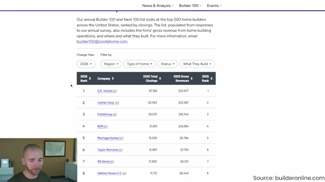
Fannie Mae's National Mortgage Database ○ — According to Fannie Mae's National Mortgage Database, the debt-to-income ratio for government-backed mortgage originations was 44% as of the third quarter of 2025. Fannie Mae's National Mortgage Database ↗
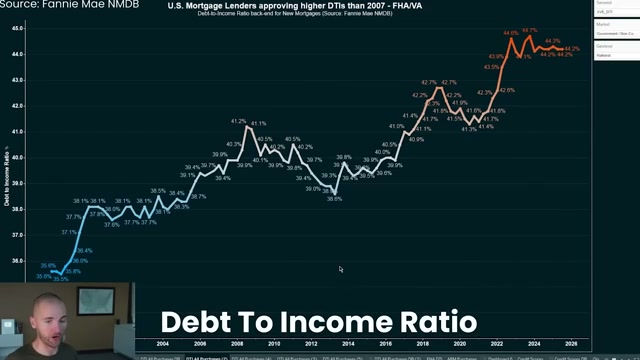
Meta CEO warns of AI bubble. it's like 1999, but worse.
Axios ✓ — Google went into negative free cash flow territory in the second quarter of 2026, the first time in two decades. Axios ↗
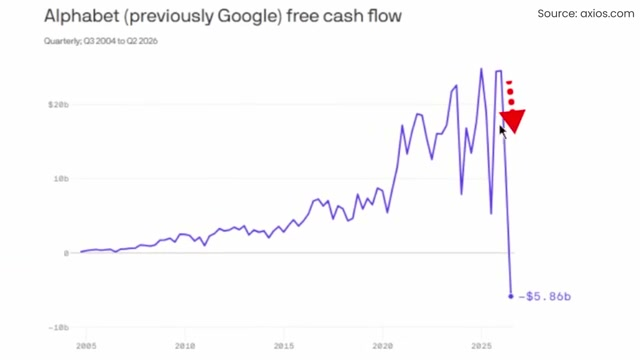
Wall Street Journal ○ — Companies big and small are mixing AI models and switching to cheaper alternatives, changing the economics of the industry. Wall Street Journal ↗
Bank of America issues CREDIT MAXXING warning. 2006 all over again.
Bank of America ✓ — Credit card and debit card spending in America surged 6.3% year-over-year in June, the biggest jump in over four years. Bank of America ↗
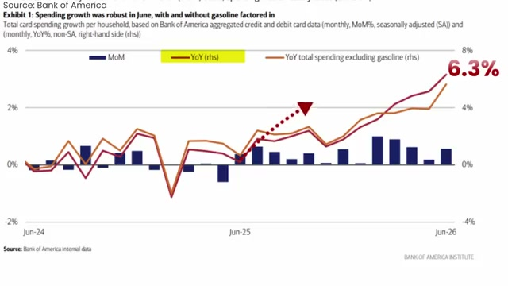
New York Federal Reserve ✓ — The percentage of credit card balances over 90 days delinquent has spiked to 13%, the highest level since the 2008-2009 financial recession. New York Federal Reserve ↗
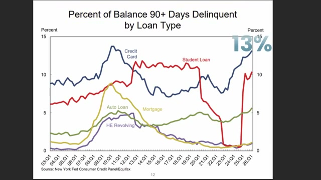
WSJ drops major warning. Six-figure losses emerge.
The Wall Street Journal ○ — The Wall Street Journal reported that pending home sales in America fell in June 2026, marking the biggest monthly drop in contract signings that year. The Wall Street Journal ↗
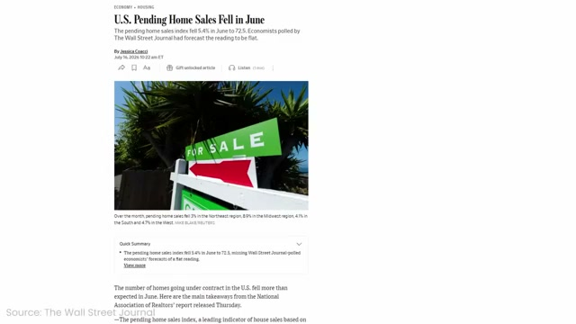
Mortgage Bankers Association ✓ — The Mortgage Bankers Association reported that mortgage delinquencies rose to 4.4% of all mortgages in the first quarter of 2026, the highest rate in seven to eight years. Mortgage Bankers Association ↗
Bloomberg warns of Demographic CRASH. 1929 all over.
Bloomberg ✓ — Bloomberg reports that the plummeting birth rate in America will completely reshape the housing market over the next 10 to 20 years. Bloomberg ↗
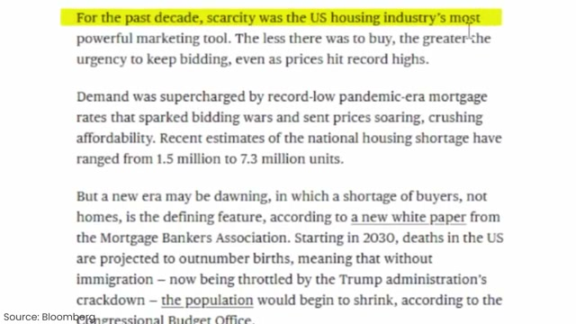
Mortgage Bankers Association ○ — The Mortgage Bankers Association argues that by 2030, America will have more deaths than births. Mortgage Bankers Association ↗
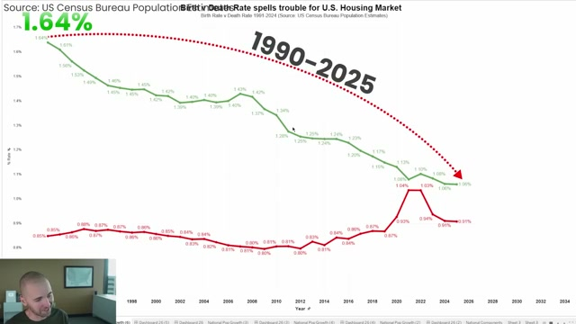
Fannie Mae warns of MASS bankruptcies. (80% migration collapse)
Fannie Mae and Freddie Mac ✓ — According to Fannie Mae and Freddie Mac, the default rate on multifamily mortgages has hit its highest level since 2009-2010. Fannie Mae and Freddie Mac ↗
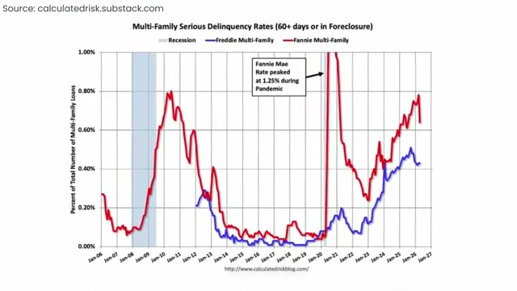
Apartment List ✓ — According to ApartmentList data, rents in Austin, Texas are down 21% from the middle of 2022 for apartments. Apartment List ↗
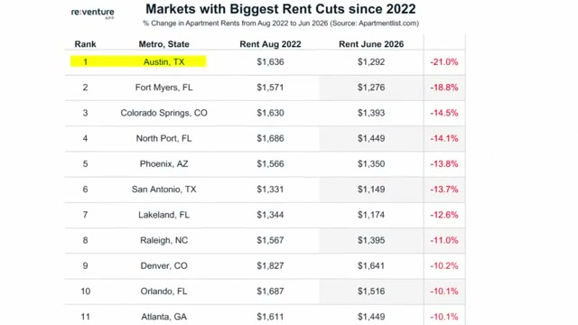
J.P. Morgan drops BOMBSHELL report. America's map just flipped.
J.P. Morgan ✓ — Home sales relative to the U.S. household population are now at the lowest level going back to 1988. J.P. Morgan ↗
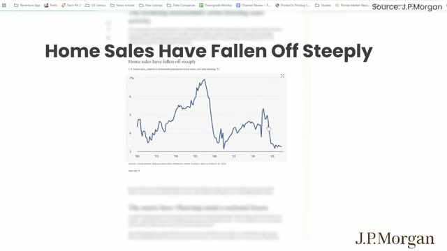
J.P. Morgan ○ — Over 20 percent of U.S. homeowners have a mortgage rate between 2.5 to 3 percent. J.P. Morgan ↗
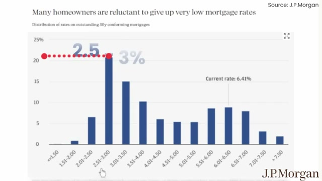
The Dam has broken. Biggest losses since 2010.
Realtor.com ✓ — Realtor.com reports that median list prices are down 2.5% year-over-year, the biggest drop since 2017. Realtor.com ↗
National Association of Realtors ✓ — The NAR reports existing home sales at 4.17 million annualized in May 2026, close to the lowest level ever. National Association of Realtors ↗
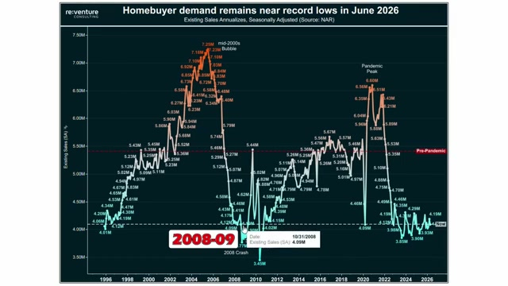
Fed reveals shocking U-TURN. ("largest sell signal in years")
Morgan Stanley ✓ — Morgan Stanley projects that mortgage rates will likely be volatile and stick around their current elevated levels under the Warsh effect. Morgan Stanley ↗
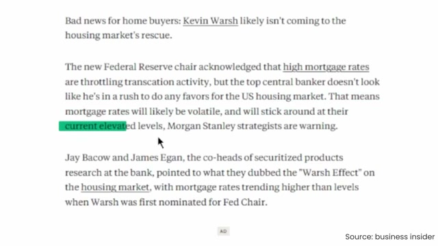
Business Insider ✓ — Business Insider reports that Kevin Warsh likely isn't coming to the housing market's rescue. Business Insider ↗
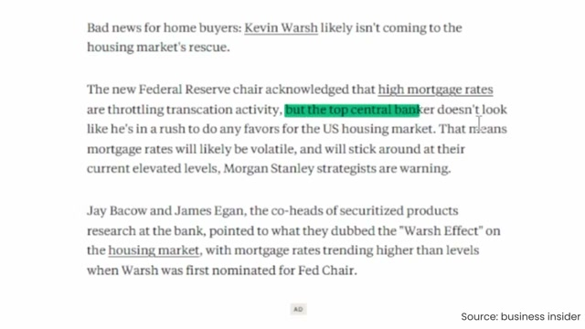
Morgan Stanley drops FINAL warning. The reset has begun.
Morgan Stanley ✓ — Morgan Stanley concluded that housing affordability is unlikely to return to more favorable levels of the past, with many owners locked into low rates. Morgan Stanley ↗
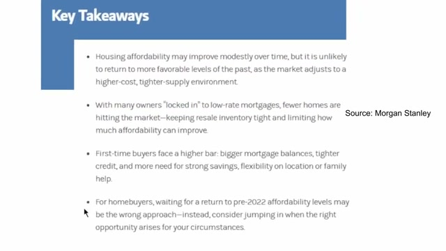
Fannie Mae ○ — According to Fannie Mae, the debt-to-income ratio for homebuyers closing on or refinancing mortgages in the U.S. is now 40 percent. Fannie Mae ↗
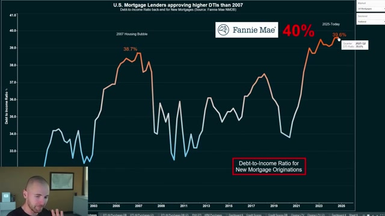
Bloomberg CANCELS U.S. Housing Market. (45% Losses Emerge)
Bloomberg ✓ — Bloomberg reported an unexpected drop in new home sales in May 2026. Bloomberg ↗
U.S. Census Bureau ✓ — According to the U.S. Census Bureau, there was 10.3 months of supply on builder lots in May 2026. U.S. Census Bureau ↗
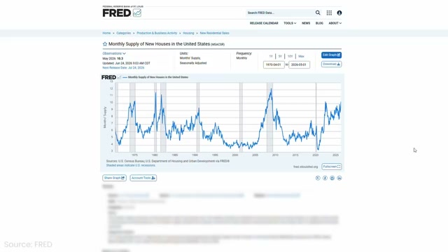
Zillow reports shocking housing U-TURN. 40% losses emerge.
ShowingTime ○ — Home tours have dropped by almost 35 to 40% in the last month and a half according to Showing Time data. ShowingTime ↗
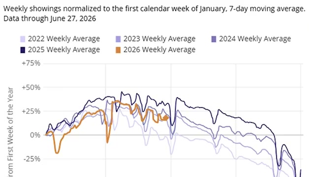
Wall Street Journal ○ — House payments for existing owners have increased 40% in the last six years, from approximately $1,700 per month in 2019 to $2,400 per month at the end of 2025, according to Wall Street Journal analysis. Wall Street Journal ↗
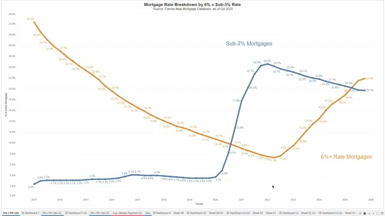
Michael Burry issues FINAL warning. ("it's like 1929 all over")
Business Insider ✓ — Michael Burry warned that Nvidia's stock losses look vulnerable and that AI token maxing trends won't last into the future. Business Insider ↗
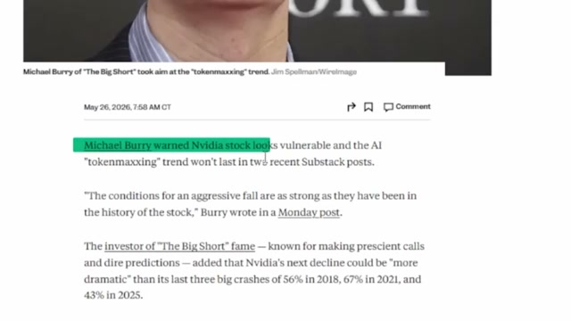
Michael Burry ✓ — The top three of Nvidia's customers are 64% of Nvidia's accounts receivable, meaning almost two-thirds of Nvidia's revenue comes from three customers. Michael Burry ↗
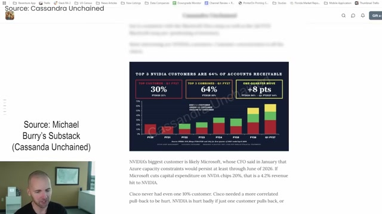
ICE issues massive foreclosure warning ($150,000 short sales in Florida)
Realtor.com ✓ — Foreclosure filings rose 14% nationwide, the biggest spike since the pandemic started. Realtor.com ↗
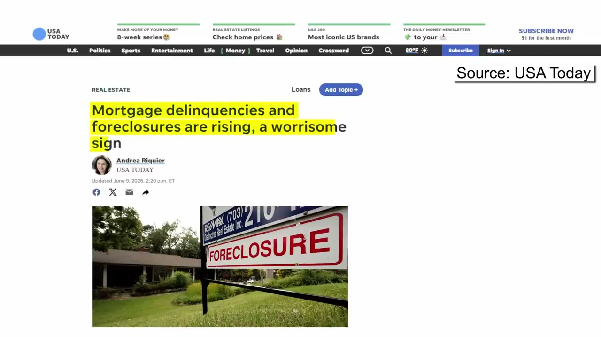
Fannie Mae ○ — According to Fannie Mae's National Mortgage Database, 22% of U.S. mortgages are over 6% rate while 19% are below 3% rate. Fannie Mae ↗
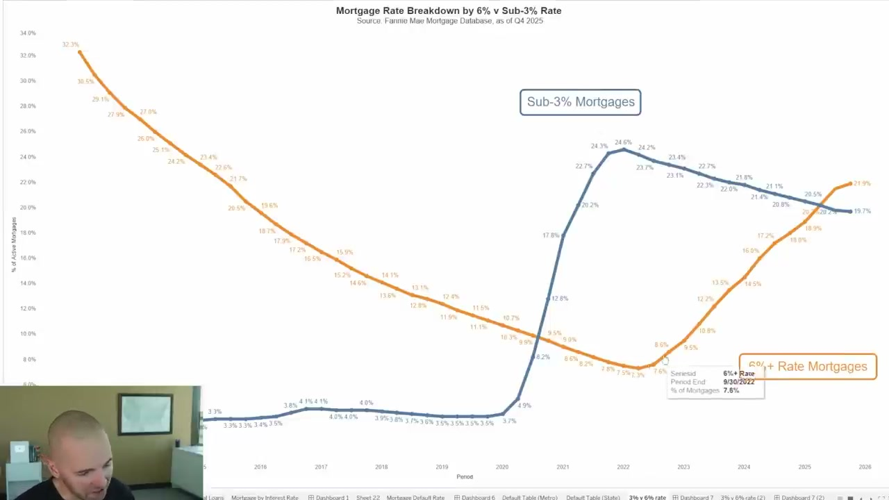
U.S. Housing Market DOWNGRADED (Lennar reports biggest drop since 2007)
Lennar ○ — Lennar cut their net price on new home deliveries by 25% in the last four years. Lennar ↗
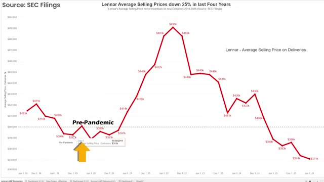
HUD / Census New Residential Sales ○ — As of April 2026, the new home builder market had 9.1 months of supply, the highest inventory level since the 2008-2009 financial crisis. HUD / Census New Residential Sales ↗
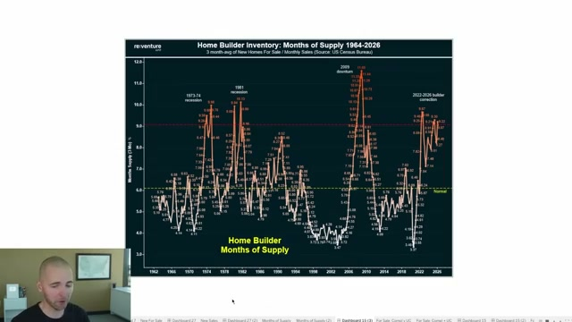
Bank of America just reported a massive MIGRATION COLLAPSE (the U.S. Map flips again)
Bank of America Institute ✓ — In the first quarter of 2026, metros like Miami, Orlando, and Tampa had some of the biggest net move-outs and population loss of any cities in the US. Bank of America Institute ↗
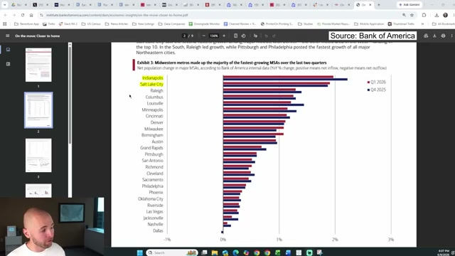
Bank of America Institute ✓ — The turnover rate of renters and homeowners moving has dropped by about 10 to 15% in the last two years. Bank of America Institute ↗
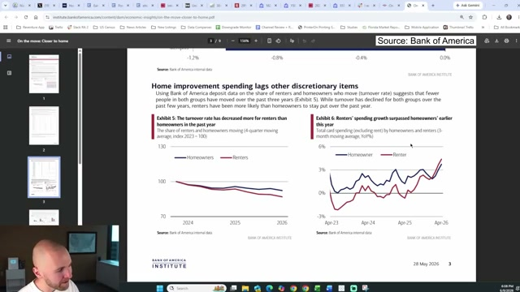
The U.S. Housing Market just FLIPPED (NAR reports new buyer statistics)
CNBC ✓ — Home sales surged in May to the highest level since December, up 3.2% year over year, according to CNBC. CNBC ↗
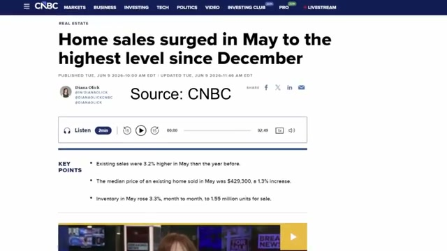
National Association of Realtors ✓ — The National Association of Realtors reported that existing home prices were up 1.3% year over year to around $429,000 for the median sale price. National Association of Realtors ↗
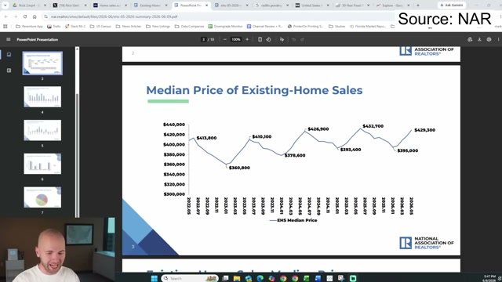
The Biggest Exodus since 2008 is happening now (Redfin reports 70% drop in FL)
Politico ✓ — According to Politico, lawmakers voted to crack down on Wall Street landlords with a blanket prohibition on purchases by large institutional investors who own at least 350 single-family homes. Politico ↗
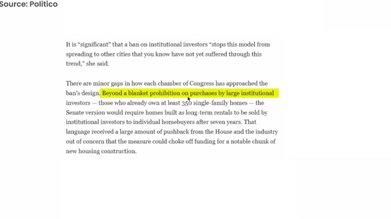
RealPage ✓ — According to RealPage, San Francisco has the highest apartment rent growth at 11% year over year. RealPage ↗
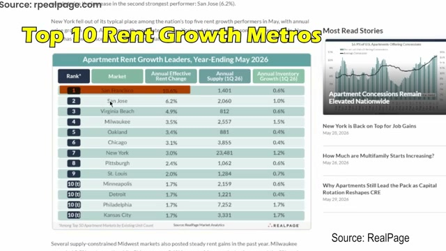
External sources
| Source | Link |
|---|---|
| Apartment List | apartmentlist.com |
| Axios | axios.com |
| Bank of America | bankofamerica.com |
| Bloomberg | bloomberg.com |
| Bureau of Economic Analysis | bea.gov |
| Business Insider | businessinsider.com |
| Calculated Risk | calculatedriskblog.com |
| Census Bureau | census.gov |
| CNBC | cnbc.com |
| FactSet | factset.com |
| Fannie Mae | fanniemae.com |
| Federal Reserve | federalreserve.gov |
| Fortune | fortune.com |
| Fox News | foxnews.com |
| Freddie Mac | freddiemac.com |
| Google Trends | trends.google.com |
| Harvard Joint Center for Housing Studies | jchs.harvard.edu |
| ICE Mortgage Technology | icemortgagetechnology.com |
| Investopedia | investopedia.com |
| Invitation Homes | invitationhomes.com |
| J.P. Morgan | jpmorgan.com |
| Morgan Stanley | morganstanley.com |
| Mortgage Bankers Association | mba.org |
| National Association of Realtors | nar.realtor |
| NPR | npr.org |
| Pew Research Center | pewresearch.org |
| Politico | politico.com |
| RealPage | realpage.com |
| Realtor.com | realtor.com |
| Redfin | redfin.com |
| Reuters | reuters.com |
| ShowingTime | showingtime.com |
| The Wall Street Journal | wsj.com |
| Zillow | zillow.com |
Also referenced (no authoritative link mapped): Adam Data, Robert Shiller, Substack (Cassandra Unchained), Ticker Trends Research, U.N..
Source videos
| # | Title | Watch |
|---|---|---|
| 1319 | RE-V | D.R. Horton issues CANCELLATION warning (Fannie mortgages collapse 50%) | watch |
| 1320 | RE-V | Meta CEO warns of AI bubble. it's like 1999, but worse. | watch |
| 1321 | RE-V | Bank of America issues CREDIT MAXXING warning. 2006 all over again. | watch |
| 1322 | RE-V | WSJ drops major warning. Six-figure losses emerge. | watch |
| 1323 | RE-V | Bloomberg warns of Demographic CRASH. 1929 all over. | watch |
| 1324 | RE-V | Fannie Mae warns of MASS bankruptcies. (80% migration collapse) | watch |
| 1325 | RE-V | J.P. Morgan drops BOMBSHELL report. America's map just flipped. | watch |
| 1326 | RE-V | The Dam has broken. Biggest losses since 2010. | watch |
| 1327 | RE-V | Fed reveals shocking U-TURN. ("largest sell signal in years") | watch |
| 1328 | RE-V | Morgan Stanley drops FINAL warning. The reset has begun. | watch |
| 1329 | RE-V | Bloomberg CANCELS U.S. Housing Market. (45% Losses Emerge) | watch |
| 1330 | RE-V | Zillow reports shocking housing U-TURN. 40% losses emerge. | watch |
| 1331 | RE-V | Michael Burry issues FINAL warning. ("it's like 1929 all over") | watch |
| 1332 | RE-V | ICE issues massive foreclosure warning ($150,000 short sales in Florida) | watch |
| 1333 | RE-V | U.S. Housing Market DOWNGRADED (Lennar reports biggest drop since 2007) | watch |
| 1334 | RE-V | Bank of America just reported a massive MIGRATION COLLAPSE (the U.S. Map flips again) | watch |
| 1335 | RE-V | The U.S. Housing Market just FLIPPED (NAR reports new buyer statistics) | watch |
| 1336 | RE-V | The Biggest Exodus since 2008 is happening now (Redfin reports 70% drop in FL) | watch |